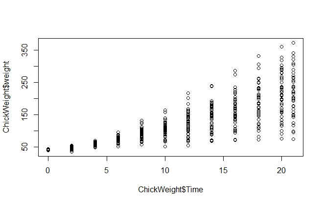

Introduction
Data visualization helps us to interpret a dataset. It helps us to observe the patterns of data, identify outliers and influential points, and understand important features of the data. Exploratory data visualization helps to see the details of the data. For example, if we use the R function plot(ChickWeight$Time, ChickWeight$weight) to explore the Chick Weight data as following, then we can see the weight vary with time, and the weight deviates more through time (figure 1).

Figure 1. Explore the Chick Weight data in R.
The way a variable is presented graphically should be adapted to the type of variable. For a qualitative variable, dot charts, bar charts, stacked bar charts, and pie charts are commonly used. In this module, we will introduce different R functions for plotting qualitative variables.
Learning Objectives
After this module, students will be able to
Generate dot plot
Generate pie chart
Generate bar chart
Generate histogram
Generate mosaic plot